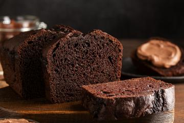
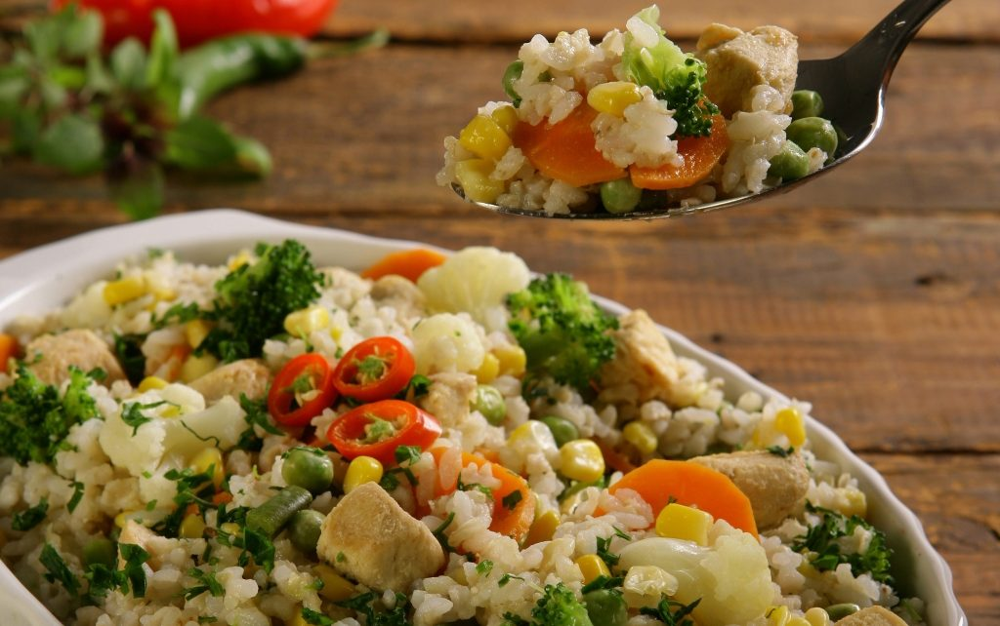

Receitas

Sobremesa
Bolo de chocolate fofinho
Aprenda a fazer um bolo de chocolate super fofinho e delicioso, ideal para a sua sobremesa!

Principal
Arroz de frango com legumes
Receita simples e saborosa de arroz de frango com legumes, ideal para o almoço em família!

Lanche
Hambúrguer caseiro delicioso
Aprenda a fazer um hambúrguer caseiro com aquele sabor de comida de rua, mas feito em casa!